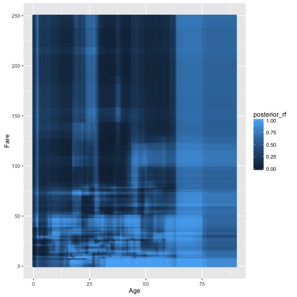
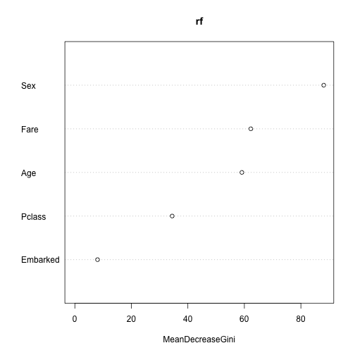
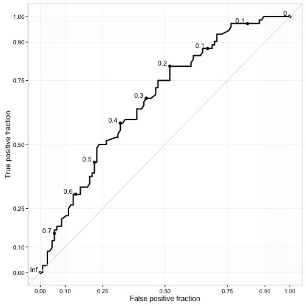
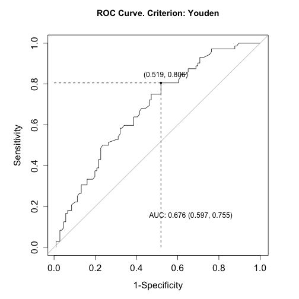

ROC, AUC i inne
Mając klasyfikator, często potrzebujemy narzędzia, które pozwoli ocenić jego jakość.
Przyjrzyjmy się lasom losowym dla dwóch zmiennych. To są obszary decyzyjne.
library("Przewodnik")
titanic2 <- na.omit(titanic)
library("randomForest")
rf <- randomForest(Survived~Age+Fare, data=titanic2)
grid <- expand.grid(Age=seq(0,90, length.out=200),
Fare=seq(0,250, length.out=200))
pred_rf <- predict(rf, grid, type="prob")[,1]
grid$posterior_rf <- pred_rf
ggplot(grid, aes(Age, Fare, color=posterior_rf)) +
geom_point(size=1)

Funkcją varImpPlot możemy pokazać ranking ważności zmiennych.
rf <- randomForest(Survived~., data=titanic2)
importance(rf)
## MeanDecreaseGini
## Pclass 34.520624
## Sex 87.590997
## Age 59.034988
## Fare 61.851399
## Embarked 7.908397
varImpPlot(rf)

Lasy losowe jako wynik zwracają wartości scorów z przedziału 0-1.
Aby ocenić jakość takich scorów często stosuje się krzywą ROC (Receiver operating characteristic), przedstawiającą zmianę dwóch współczynników, jako funkcję przyjętego punktu odcięcia.
czułość (sensitivity) - true positive rate
specyficzność (specificity) - true negative rate
accuracy - skuteczność
Youden J = czułość + specyficzność - 1.
library("caret")
inds <- createDataPartition(titanic2$Survived, p = 0.75)
titanic2_train <- titanic2[inds[[1]],]
titanic2_test <- titanic2[-inds[[1]],]
rf <- randomForest(Survived~Age+Fare, data=titanic2_train)
library("plotROC")
pred_rf <- predict(rf, titanic2_test, type="prob")[,2]
roc.estimate <- calculate_roc(pred_rf, titanic2_test$Survived)
single.rocplot <- ggroc(roc.estimate)
plot_journal_roc(single.rocplot)

library("ROCR")
pred <- prediction( pred_rf, titanic2_test$Survived)
perf <- performance(pred,"tpr","fpr")
plot(perf,col="blue")
abline(0,1)

Aby ocenić jakość klasyfikatora można wykorzystać całą krzywą ROC lub pole pod nią - AUC.
Jeżeli chcemy wybrać optymalny punkt podziału, wygodnie jest skorzystać z pakietu OptimalCutpoints i funkcji optimal.cutpoints wybierającej optymalny punkt podziału.
library("OptimalCutpoints")
pref_df <- data.frame(pred = pred_rf, truth = titanic2_test$Survived)
oc <- optimal.cutpoints(X = "pred", status = "truth", methods="Youden", data=pref_df, tag.healthy = "0")
summary(oc)
##
## Call:
## optimal.cutpoints.default(X = "pred", status = "truth", tag.healthy = "0",
## methods = "Youden", data = pref_df)
##
## Area under the ROC curve (AUC): 0.676 (0.597, 0.755)
##
## CRITERION: Youden
## Number of optimal cutoffs: 1
##
## Estimate
## cutoff 0.2360000
## Se 0.8055556
## Sp 0.4811321
## PPV 0.5132743
## NPV 0.7846154
## DLR.Positive 1.5525253
## DLR.Negative 0.4041394
## FP 55.0000000
## FN 14.0000000
## Optimal criterion 0.2866876
plot(oc, which=1)
